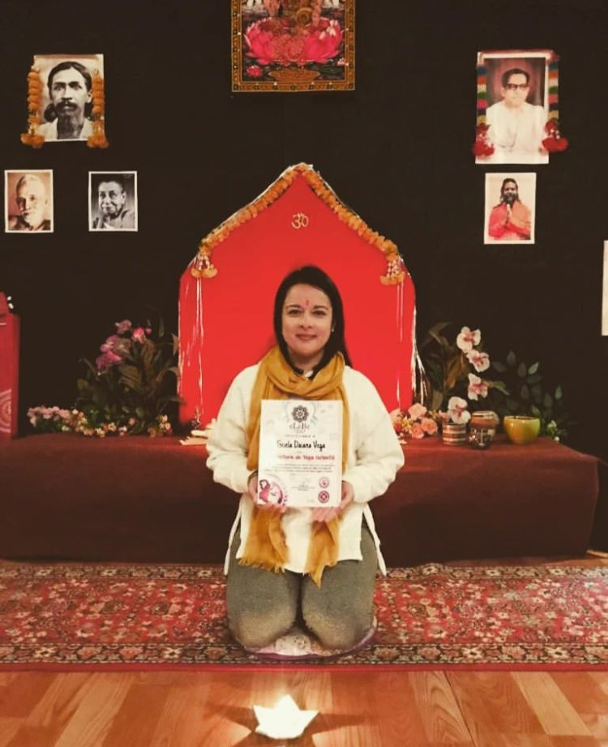

Mi nombre es Gise soy practicante de yoga desde el año 2017, que me acerque a esta disciplina por curiosidad de saber de que se trataba. Esa curiosidad me llevo a encontrar algo que nunca había podido lograr con nada que se refiera a dedicar tiempo para mi: TENER CONSTANCIA.
Durante este recorrido fui descubriendo (y sigo descubriendo) el bienestar que me generaba la practica y sentí muchas ganas de aprender y poder saber como compartirlo, es por eso que comencé a estudiar. En diferentes escuelas ( Escuela al de Yoga Ezeiza, Escuela de Yoga Naisha, Escuela Elebe Yoga Argentina entre otras instituciones) me fui formando y adquiriendo conocimientos que me permiten compartir con toda persona que le resuene y quiera acercarse al Yoga. Cabe mencionar que en esas instituciones recibí el conocimientos de diferentes maestros, profesores que se dedican con mucho amor a esta practica y enseñan con ese mismo amor, respeto y humildad.
Siento mucha felicidad de poder brindar clases adaptadas, respetuosas e inclusivas pero mas felicidad siento aun considerándome una eterna estudiante, ya que aprendo de toda persona con la que comparto este camino.
Yoga tiene muchísimas definiciones, pero voy a destacar que es un camino de AUTOCONOCIMIENTO, el trabajo de cada practica es individual y personal, los beneficios de la constancia son sumamente positivos. El autoconocimiento es una forma de vida que nos da la capacidad de autoanalizarnos y entender como somos, que sentimos, como son nuestras emociones y como reaccionamos a ellas. Nos ayuda a vivir mejor, a comprendernos y comprender a los demás. Claro que esto no sucede de un momento para otro, es por eso que es una forma de vida. Es un camino a recorrer, cada practica es un viaje hacia nuestro interior.
El Yoga no exige, el Yoga es un camino real, con infinitas herramientas que nos ayudan a habitar nuestro cuerpo de manera consiente, respetuosa y amorosa. Con estas herramientas aprendemos a mejorar nuestra salud física, mental y emocional.

yoga es una revolucion total que comienza en uno mismo, compartir yoga es un acto de amor.